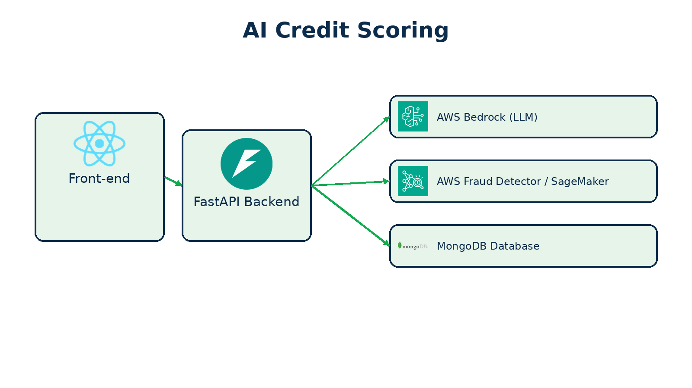

Overview
The AI credit scoring application follows a full‑stack architecture in which a React front‑end collects user inputs and a FastAPI backend orchestrates scoring, summarization and anomaly detection. After submitting their details, applicants receive an estimated credit score and personalized feedback.
Key Features
- AI‑generated credit score and detailed breakdown
- Interactive user interface with sliders and tabbed navigation
- LLM‑generated risk summaries and actionable suggestions
- Anomaly detection via AWS Fraud Detector or Amazon SageMaker
- Modular FastAPI backend with environment‑driven configuration
Architecture
The architectural diagram below illustrates how the components of the system interact. Users enter their information in the front‑end, which forwards the data to the FastAPI backend. The backend evaluates the data against rule‑based screening logic, computes an initial credit score, calls a large language model hosted on AWS Bedrock to produce a risk summary, invokes an anomaly detection service if configured, and persists the record in MongoDB.
This modular design allows the application to run locally or integrate with cloud services such as AWS Bedrock, Fraud Detector, SageMaker and MongoDB Atlas.